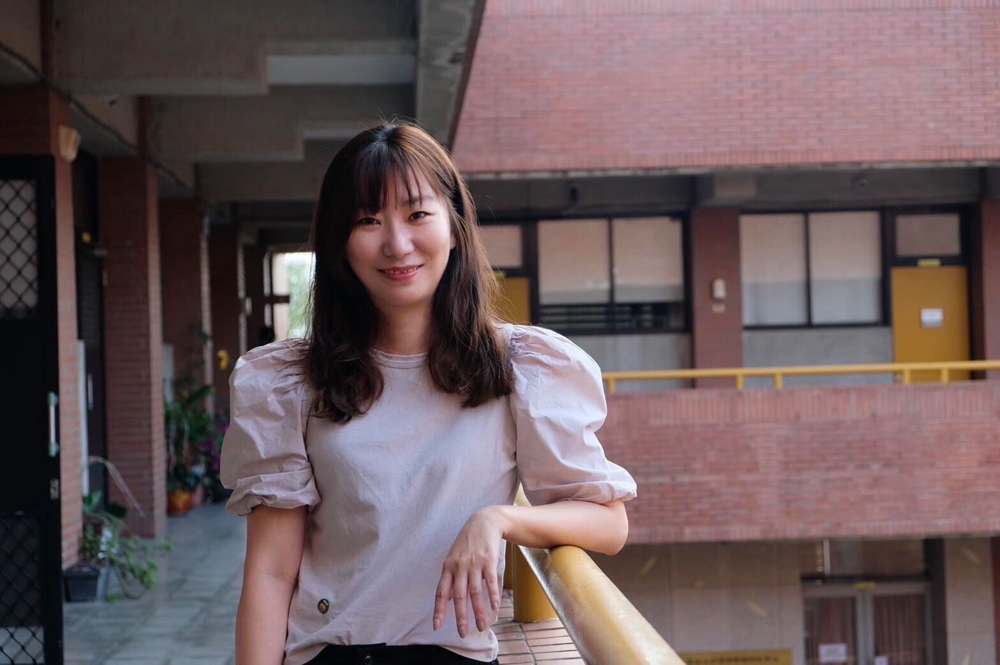
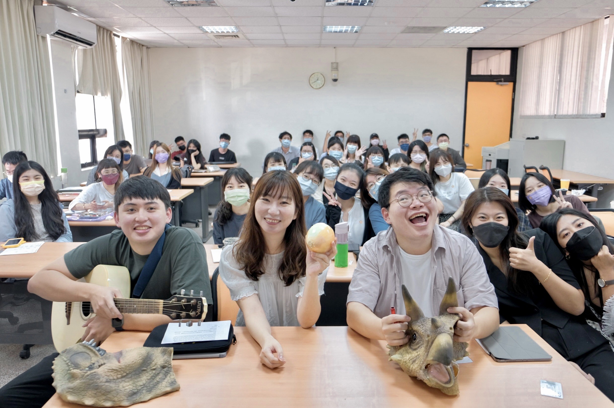
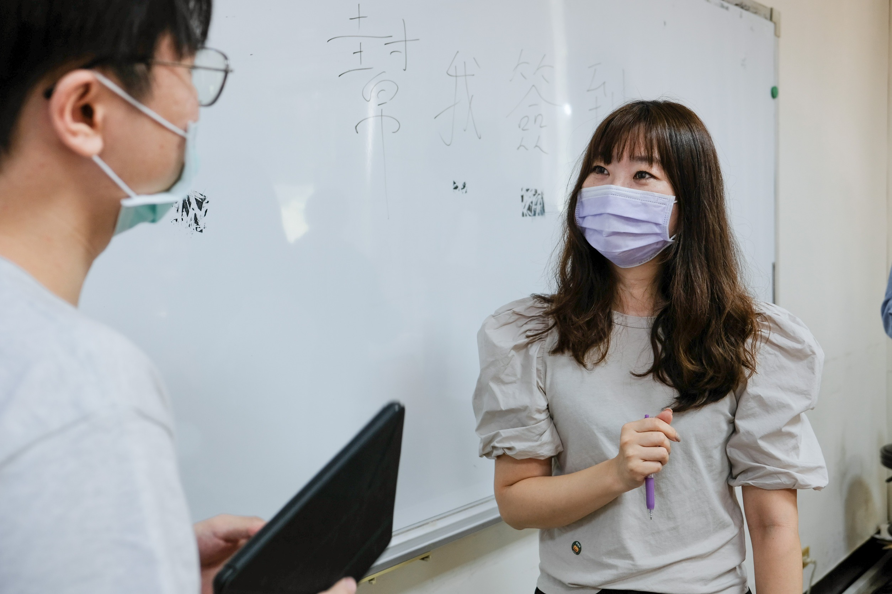
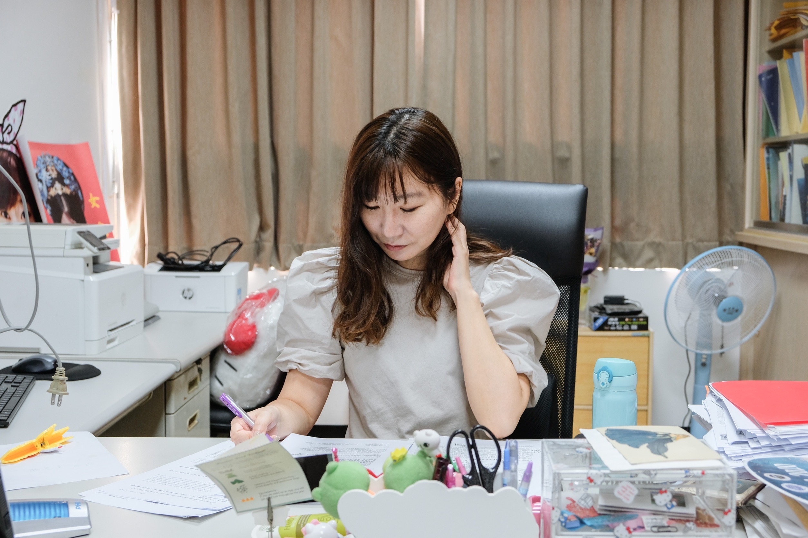
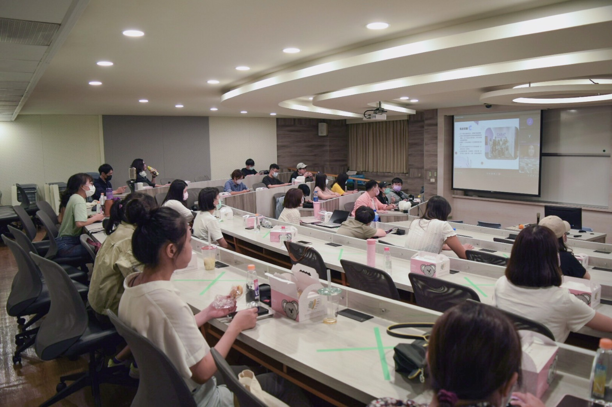

行傳女神接任第16任所長 IMC未來搶先報你知
中山大學行銷傳播管理研究所所長於本(110上)學期起由王紹蓉教授擔任。紹蓉所長在數位媒體和整合行銷傳播（簡稱IMC）上的豐富教學經驗，常使外系所學生慕名前來求學，而過去擔任管理學院國際學程主任的歷練也培養出紹蓉所長觀望大局的視野。因此，本期電子報封面人物邀請王紹蓉所長，與大家分享IMC扮演的策略性角色和行傳所的近期規劃，讓讀者搶先瞭解新所長眼中的行傳所樣貌。

融合行銷與傳播領域 打造培養人才的搖籃
過去很多人總將行銷與傳播視為兩個領域，然而隨著數位媒體的發展，行銷與傳播不但相輔相成，更是一加一大於二的集合體。紹蓉所長表示，傳播領域中的傳播者與接收者，即是行銷領域中的行銷人員與消費者，傳播負責處理與目標客群溝通的訊息和管道，例如廣告、公關，而行銷負責制定為目標客群設計的活動，例如促銷和產品推廣。紹蓉所長接著以業界為例，說明行銷與傳播不可分割的關係，她指出，行銷人員在策略發想時，無可避免的會經由社群媒體來尋找熱門話題，籌畫行銷活動，而媒體的主要功能在於傳遞訊息以及凝聚群眾意識，透過精準的媒體曝光和點擊，能塑造品牌形象，進而提升產品銷售率。由此可見，具備整合行銷傳播能力者，才有機會從劇烈競爭的職場環境中脫穎而出，而行傳所則會持續扮演培育IMC人才的角色，提供學生多元化的專業訓練。

厚植學術研究實力 掌握市場最新趨勢
行傳所的師資陣容十分堅強，所上的教授皆有至少一個甚至更多的計畫正在執行中。紹蓉所長指出，教學與研究也能夠相輔相成，當教授針對某一趨勢、議題進行深入研究時，新概念的引入會帶入課程，而這意味著學術能量的深化，可以體現於教學內容中，而從課堂中和同學的互動、腦力激盪，也可以激發出新的研究想法。因此，教授們在學術界的持續深耕，象徵著所上學生們能享受到最前沿的研究成果，同時也代表著學生們能學習到教授如何將理論與時事案例連結的研究功力，有助於學生掌握行銷傳播的最新趨勢與潛力議題。

擴大人際網絡 化身職場超新星
除了學術能量豐沛滋養著學生接觸新議題外，行傳所也在公家機關、新聞媒體業、廣告行銷業、新科技產業中，培養出一批優秀的學長姐。面對如此龐大的人脈資源庫，紹蓉所長計畫提高邀請各年齡層的行傳校友們回來分享職場經驗的頻率，讓一般生能事先知曉進入嚮往企業前需精進的專業技能，在進入職場前即能與業界緊密接軌，對於在職生而言，也能拓展職場上的社交網絡和支援體系。期盼在促進校友與在校生的密切交流下，能將行傳所的人脈網絡從學術殿堂延續至職場生涯。


【行傳活動】
迎新相見歡 行傳新人大集合
因應疫情趨緩，國內大學陸續從線上教學回歸到校園上課，所學會把握實體授課第一周，將過去僅能視訊見面的新生與所上教授齊聚一堂，於10月1日舉行迎新說明會。藉由教授研究領域介紹與學長姐實習分享，期望同學更熟悉行傳所研究核心，以及掌握行銷傳播領域的實習要領。

培養多元專業能力 行銷與傳播缺一不可
本次說明會由王紹蓉所長揭開序幕，所長提到：「研究所的價值，是從撰寫論文的過程中習得邏輯思考與批判力」，因為思考模式的訓練，有助於強化問題解決能力。同時，所長也強調：「行銷和傳播是不可切割的」，因為行銷是活動策略的制定，傳播是溝通管道的建立，所以好的行銷策略要借助好的溝通管道向消費者傳播資訊，而行傳所作為國內唯一整合行銷與傳播專業的系所，致力於培養學生整合行銷傳播的能力，相信在行傳所的訓練下，同學們未來的職涯發展將無可限量。

研究領域多元豐富 專業知識隨手可得
行傳所教授研究領域多元，王紹蓉所長的研究專長與新媒體、社群媒體相關；蕭蘋教授是性別研究權威，專注媒體的性別探討；李雅靖教授致力於電子商務與數位行銷之研究；周軒逸教授對消費者心理、競選策略十分在行；鄭安授教授長期投入網絡資訊、公部門電子化之研究；譚躍教授主攻新聞媒體在公領域的作用，近期投身災難風險傳播的探討；張榮華教授擅長服務行銷、數位溝通行銷。由此可見，處在教授皆學有專精的研究環境中，同學們皆能習得多方面的行銷傳播知識，而這將有助其論文發想。

職場大解密 實習重點一把罩
說明會尾聲，所學會安排3位碩二學長姐向新生傳授實習心得。首先，在凱絡媒體實習的劉亭蘭學姐提到「團隊精神」的重要性，由於「企劃」的完成涉及不同專業背景之人員，故試著用對方能理解的方式與其溝通，並尊重他人想法，處事將會更圓融。緊接著，在日產汽車擔任數位行銷部實習生的羅有成學長發現，汽車業重視的是銷量，而非貼文聲量，所以當創意無法帶動銷量時，行銷部便需即刻調整行銷誘因，應對瞬息萬變的市場變化。最後，在國泰金控實習的唐敏玹學姐則勉勵在場同學「不要懷疑自己付出的努力，因為過去的經驗是在替未來鋪路」。實習的目的是希望通過實作來驗證嚮往領域的工作環境是否與自身期待相符，因此於過程遇見的挑戰終將化為成長養分，滋潤未來職場生涯。

【行傳講座】
掌握品牌經營基本功 用戶體驗與時「橘」進
遊戲橘子過去曾代理天堂、楓之谷等多款熱門線上遊戲，近年來則不斷擴大集團版圖，期望經營涵蓋更為豐富多元的全方位網路企業。中山大學行銷傳播管理研究所偕同慶聯有線電視股份有限公司、港都有線電視股份有限公司，於10月15日邀請遊戲橘子集團品牌中心總監陳秉良，分享品牌策略的發想，以及品牌與社會大眾溝通交流的案例。

內容與包裝並行 獨一無二的品牌價值
作為品牌中心負責人，陳秉良總監側重於品牌中的「文化」與「設計」兩個面向。為創造出無法複製的文化優勢與品牌體驗，陳秉良總監在規劃企業形象時，會反覆針對文化與設計面提出疑問，例如：企業的初衷是什麼？企業的願景又是什麼？在市場中又要如何呈現獨特的風格美學？所以企業必須去尋找自己的理念，並透過說故事的方式來具象化品牌樣貌，展現自身品牌的特別之處，以此號召他人響應共同的目標，進而得出一加一大於二的價值。

打破舊有分工思維 協作出優質品牌體驗
在組織中，傳統的分工方式是直接將各項任務分配給各部門，所以在執行任務的過程中，各個部門間經常缺乏有效地溝通，導致各項任務結果所串聯起來的品牌體驗不夠流暢、全面。因此，陳秉良總監認為品牌戰略的執行，要先規劃出完整的品牌體驗流程，再尋找不同階段中所需要的部門及人力，讓不同部門的員工能協力完成任務，從而打造出優質的用戶體驗。
建立多樣文化通路 塑造企業形象
每個遊戲都有自己的「世界觀」，世界觀之於企業就像一個故事，經營世界觀就像是說書。陳秉良總監以遊戲橘子的吉祥物橘子人為例，橘子人從公司內部績效考核獎座上的公仔，發展成可對外公關使用、具辨識度的公仔——Q Brick，說明企業擁有明確的形象，能使其傳播的力量更為強大。此外，鼓勵大眾突破舒適圈去冒險追夢的遊戲橘子也從公益角度切入企業形象，2018年適逢橘子關懷基金會成立10周年，創辦人劉柏園、長跑選手陳彥博與藝人宥勝等五人，組成一支台灣南極長征隊，致敬冒險開拓的精神，展現出企業勇於面向挑戰的膽略。而為喚起社會大眾對於冒險價值的共鳴，該活動後續也透過舉辦展覽，展示遠征過程的辛酸與喜悅。可見品牌能藉由不同的文化通路，形塑出活潑、勇於挑戰的形象。

【行傳講座】
推動亂世中的公共議題 化身政策修正的幕後推手
在議題風向轉變劇烈的時代，缺乏公權力的公關公司要如何翻轉民眾對社會議題的認知？並與政府產生連結，進而影響法條修正？中山大學行銷傳播管理研究所偕同慶聯有線電視股份有限公司、港都有線電視股份有限公司於10月22日邀請台灣首屈一指的公關公司—戰國策傳播集團（以下簡稱戰國策）董事長吳春城先生與同學分享公關運作歷程，帶領同學了解公關公司如何推動公共議題。

滲入日常的公關策略 推動修法的關鍵解析
從政治公關起家的吳董事長指出，當特定群體意識到修法案的通過會使其權利遭到侵害時，便會組織動員阻止法案推動。因此政府會與公關公司合作，透過將修法議題日常化的方式，來獲得民眾的理解與支持，促進法案的推動。吳董事長以戰國策「室內禁菸」的案子為例，人們暴露於二手煙環境有害身體健康，但過去政府卻無法可管，於是戰國策向政府提議從室內公眾場合—餐廳推行禁菸，隨著越來越多餐廳響應政策，以及民眾「無菸」意識的抬頭，後續政府在室內禁菸法的推行上會相對順利。憑藉對議題的高敏感度，戰國策秉持「跑在政府前，讓政府跟著走的姿態」瓦解困難議題，創立戰國策在政治界的聲譽，搖身為政府推動法律修正的幕後推手。

日新月異的傳播手法 整合行銷勢在必行
具有生命力的公關公司，在傳播資訊方面是會隨著社會趨勢轉變的。因此，吳董事長近來將戰國策傳播集團的業務範圍，從原先的公關領域拓展至整合行銷領域，透過結合公共事務強項與政治策略優勢，以及掌握大數據中用來操作議題的口碑輿論，吳董事長期許在服務項目更為全面下，戰國策能成為價值創造者與傳播工具整合者，協助客戶成為尖端企業。
崛起的壯世代 擺脫銀髮刻板印象
隨著養生風氣的盛行，台灣人平均壽命漸長。面對一波波退休潮，吳董事長認為出生在30到50年代，歷經台灣產業工業化、全球化與數位化發展，同時掌握全台約2/3財富的「壯世代」，其退休規畫除了在家含飴弄孫外，這群有經濟實力的「壯世代」更該發揮其在經濟上的影響力，將錢財花費於夢想的完成，而不全作為儲蓄用，來使社會金流活絡，促進社會經濟之發展。為了提倡上述的晚年快樂生活精神，吳董事長創辦台灣高齡化政策暨產業發展協會，並接任理事長一職，期盼透過推廣壯世代理念，喚醒年長者持續追夢，壯大自己活出美好人生。

公共議題的倡議能透過討論度的創造來吸引民眾關注，所以熟悉公共策略擬定，具有整合行銷傳播能力的公關，扮演政府與民眾間的溝通橋梁，負責激發民眾對議題的理解，促使法律推動。吳董事長強調，公關使命是提升民眾生活品質，如「壯世代」願景鼓勵年長族群勇敢追夢，因此呼籲公關人能透過關注社會議題的方式培養公共議題敏銳度，一同讓社會欣欣向榮。
行銷傳播講座預告
講者／服務單位
講座講題
講座日期
待定
待定
待定
==本刊完==
感謝您閱讀本期電子報，您的支持是我們進步的動力
若有任何建議與鼓勵，請於上方惠賜您的寶貴意見，謝謝！
若有任何建議與鼓勵，請於上方惠賜您的寶貴意見，謝謝！